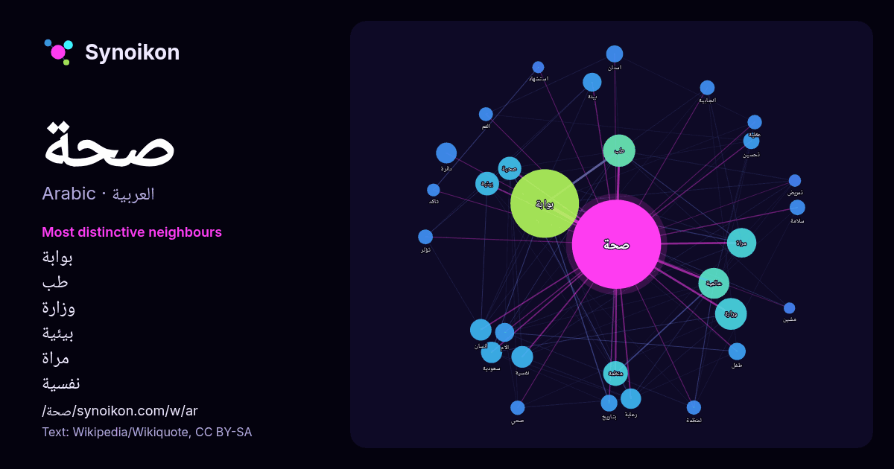

العربية · كلمة شائعة
صحة
“health” · الكلمات الموجودة حولها في 1140 ورودًا من ويكيبيديا, Wikiquote.

الجيران الأكثر تميّزًا
- بوابة 321×
- طب 73×
- وزارة 34×
- بيئية 32×
- مراة 29×
- نفسية 29×
- صحية 24×
- عالمية 22×
- الام 20×
- انجابية 20×
- رعاية 18×
- دائرة 17×
- تحسين 17×
- منظمة 17×
- اسنان 17×
- لمنظمة 17×
- تؤثر 16×
- عقلية 15×
- بتاريخ 15×
- الفم 15×
× = كم مرة أكثر مما في نصوص ويكيبيديا العامة.
الجيران الأكثر تكرارًا
- بوابة 426
- طب 95
- وزارة 92
- عالمية 87
- مراة 79
- منظمة 56
- بيئية 51
- صحية 49
- سكان 46
- نفسية 43
- انسان 42
- سعودية 41
- دائرة 39
- رعاية 38
- الام 33
- بيئة 32
- مجتمع 32
- رجل 31
- مجال 28
- طفل 27
في السياق
- تلفيات لممتلكات المنشأة. تحقيق الصحة، والمحافظة عليها هي عملية صعبة وفعالة.وهناك استراتيجيات فعالة لضمان صحة الفرد وتحسين صحة الفرد ويشتمل ذلك على عدة عناصر: Wikipedia snippets · صحة
- قادة العالم .حيث تكون هناك تغييرات حقيقية على البيئة ، صحة السكان معرضة لمخاطر محتملة . سياسة صحة البيئة يمكن أن تنفذ على مستويات عديدة من الحكومة ، تتضمن Wikipedia snippets · سياسة صحة البيئة
- والتلميع المنتظم للأسنان. بين عمليات التنظيف التي يقوم بها أخصائي صحة الفم يجب الحفاظ على صحة الفم، فهو متطلب أساسي لمنع تكون الجير والذي يتسبب في المشاكل Wikipedia snippets · صحة الفم
- … 010 في رواندا. "Statistics". مؤرشف من الأصل في 2014-03-20. اطلع عليه بتاريخ 2012-03-22. بوابة المرأة بوابة رواندا بوابة صحة بوابة طب Wikipedia snippets · صحة الأم في رواندا
- مساعد وزير الصحة على PHS. صحة عالمية فحص حديثي الولادة صحة نفسية رعاية صحية علوم طبية حيوية الصحة والشيخوخة السمنة صحة استراتيجيات وبرامج الصحة العمومية Wikipedia snippets · صحة عامة
- بهذه الصيغة المنطقية صحيحة. تكون أي مناقشة صحيحة فقط إذا كانت صحة مقدماتها المنطقية تتضمن صحة نتيجتها وكانت كل خطوة أو مناقشة فرعية أو عملية منطقية في المناقشة Wikipedia snippets · صحة (المنطق)
- متعلّقة بعنوان صحة. إذا وصلت لهذه الصفحة عبر وصلة داخليّة، فضلا غيّر تلك الوصلة لتقود مباشرة إلى المقالة المعنيّة. صحة عامة صحة (منطق) صحة (المنطق) كون Wikipedia snippets · صحة (توضيح)
- … elease 2017-05-22 (بالإنجليزية) (2017-05-22 ed.), DOI:10.6084/M9.FIGSHARE.5032286, QID:Q30141628 بوابة سلطنة عمان بوابة صحة Wikipedia snippets · وزارة الصحة (سلطنة عمان)
كلمات أخرى
- أغنية
- إله
- تاريخ
- جبل
- جرس
- جزيرة
- جسر
- حديقة
- حصان
- حقيقة
- حياة
- خبز
- خريطة
- خريف
- ذهب
- زمن
- ساعة
- شاي
- شتاء
- صحراء
- صمت
- صيف
- طبيعة
- طريق
- طعام
- ظل
- عائلة
- عاصفة
- عسل
- علم
- عمل
- غابة
- فن
- قطار
- قطة
- قلب
- قوة
- كلب
- لغة
- ماء
- مال
- مدينة
- مرآة
- مطر
- ملح
- مناخ
- موت
- نجم
- والدة
حُسبت مسبقًا في 2026-10-09 بالإعدادات الافتراضية (±5 كلمات، مدوّنة متوسطة). يمكن للخريطة التفاعلية تحديثها ببيانات حية.
واجهة مترجمة آليًا؛ نرحب بالتصحيحات.